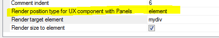

This document describes the updates and fixes made to Alpha Anywhere since its initial release.
To see the 'What's New in V12' document (which describes all of the new features in Alpha Anywhere's initial release) please click here.
Please note that Alpha Anywhere patches are only available to users with
a current subscription.
You can verify your subscription status from within Alpha Anywhere by
going to Help, About, or by clicking this link shown here (https://activation.alphasoftware.com/subscriptionStatus.aspx).
If you install an update for which your subscription is not entitled,
you will need to uninstall the update and rollback to an older version
that you are authorized to use in order to continue using Alpha
Anywhere.
In addition to the official updates that Alpha Software makes available from time to time (which are described in this document), we also make available our internal pre-release builds that allow you to see what features have been added and what bugs have been fixed since the last official update. The features and bug fixes in the pre-release build will be part of the next official update. To see the pre-release notes, please click here.
| UX Component | Dynamically Re-populate the Choices in an Edit-Combo using Javascript |
The choices shown in an edit-combo can be
dynamically repopulated at run-time using
Javascript. Watch Video Date added: 2014-12-21 |
| UX Component | Constraining an UX that has Panels to an Element Rather Than Entire Window |
When a UX component that uses Panels is
rendered, by default it consumes the entire
window (only true if UX uses Panels). That means
that if you have created an .a5w page to render
the component and placed HTML markup on the page
that you would like to be rendered in addition
to the UX component, that markup will be
overwritten by the UX. An advanced property of
the UX now allows you to specify that the UX
should be constrained to an element, rather than
the entire window. In this video we show how an .a5w page can be defined with a DIV to contain the UX and how the UX can be configured so that it is constrained to this DIV element. (Requires build 4411 or above). Watch Video Download Component Date added: 2014-12-22 |
Publishing Web Applications - Publishing Profiles - Lock Profile - A new property has been added to each publishing profile. The 'Lock' property allows you to lock a profile to prevent accidental publishing to a deployed application.
The 'Lock' property can be set to blank (not locked), 'Locked' or 'Locked with password'.
At publish time, if you select a profile that has been locked, the publish will be aborted. If you select a profile that is 'locked with password', you will be prompted for a password before publish continues.
UX Component - List Control - List Builder - Resizeable - The List builder dialog window is now resizeable.
ui_bitmap_info_get() Function - Image Type - Now can return the image type of image binary data.
Syntax:
c type = ui_bitmap_info_get(b blobImageData,"T")
Example
dim b as b
b = file.to_blob("c:\images\image1.jpg")
? ui_bitmap_info_get(b,"T")
= "JPG"
UX Component - List Control - Numeric Fields - Client-side Display Format - The List Builder now allows you to specify a client-side display format for numeric fields. Previously you had to define a client side display format by directly editing the template for the field. This method is easier than editing the template.

AlphaDAO - MS SQL Server - DateTimeOffset Field Type - Support has been added for the SQL Server DateTimeOffset field type.
The Alpha Anywhere support for the SQL Server DateTimeOffset type works as follows:
UX Component - Web Security Server-Side Action Scripts - The web security action scripts in a UX component now allow the password to be optional in the variable mapping even if the security setting require a password. The password is optional if the component can only edit an existing security record. The password mapping is required if the component can add a new user security record. A warning message will appear when the action script is saved if a password variable is not specified.
Xbasic Code Editors - JSON Strings - Real-time Validation - If you use the specify <<%json%... %json% delimiters to enter a long string of JSON data, the Xbasic editor will perform real-time validation on the JSON data.
For example, in the image below, the JSON has an error because of the trailing comma after the last property (age: 23). Notice the squiggly red line indicating the error. If you click on the error indicator you will see the error message.

Reports - Free-form Reports - Text Dictionary Tags
- You can now use text dictionary tags
(
For example, you can set the label of a column to
Next, turn on the text dictionary feature in your web application by going to the Web Projects Properties dialog when the Web Projects Control Panel has focus and specify the connection string and table name for your text dictionary.
To define entries in the Text Dictionary select the 'Text dictionary...' menu item from the 'Reports', 'Label' or 'Letter' menu while you are editing the report, label or letter.
json_to_xml() Function - ATOM Format - The json_to_xml() function can now generate XML using the "atom" format:
For example:
js = <<%str%
{
"OrderId":10248,
"ProductID":11,
"UnitPrice":14,
"Quantity":12,
"Discount":0
}
%str%
dim xml as c
xml = json_to_xml(js)
dim format as c
format = <<%str%
{ "format" : "atom"}
%str%
dim xml as c = json_to_xml(js,"",format)
xmlns:d="http://schemas.microsoft.com/ado/2007/08/dataservices">
UX Component - Panels - Render Position - By default, when a UX component that has Panels is rendered, it consumes the entire window. In certain cases you might want to constrain the UX to a particular element.
The 'Render position type for UX component with Panels' property allows you to constrain a UX with Panels to a specified element. The default for this property is 'window'

Dynamic Connection Strings - Field Validation - Cross-file Validation Rule - Was not honoring dynamic connection strings.
UX Component - PhoneGap - Windows Phone 8.1 - Ajax callbacks in PhoneGap applications on Windows Phone 8.1 were not working.
AlphaDAO - SQL Server - Varchar fields - Memory Leak - Fixed a memory leak when executing update statements that used arguments.
UX Component - List Control - Detail View - Image Capture using Camera - PhoneGap - Fixed an issue where the image was lost when the data was synchronized. This issue only occurred in PhoneGap applications.
UX Component - List Control - No Records in List Message - List Virtualization - The 'no records in list' message did not display if List Virtualization was turned on.
Security Framework - Editing an Existing User - Under some circumstances you would get an error when trying to edit the properties of an existing user account.
UX Component - Client-side onSynchronize Event - Changed the order in which this event is fired. It is now fired after the code that sets argument values in the stateInfo object has executed.
UX Component - Chart Control - Javascript Events - If you executed an event (say a click on a pie chart slice) and the data that was passed to the event handler had single quotes in it, you would get a Javascript error.
UX Component - Tab Controls - Panels - Fixed a bug rendering nested Tab controls when the UX used Panels.
Web Applications - Security Framework - Alternate Login - Under certain conditions, when a new user was added a duplicate record in the security tables was being created.
UX Component - Buttons - Label Position - If a button (or other non-data control) had its label position set to some value other than 'None' the control did not render correctly. This bug was introduced in the previous update.
Grid Component - Edit-combo - v.hasStoredValue Error Message - If a Grid that contained an edit-combo was built using an older version of Alpha Anywhere and then run using Version 3.1 you would get an error stating that the v.hasStoredValue property was not found. The solution was to edit the edit-combo and then re-save it. Now, it is no longer necessary to edit edit-comb control and re-save it.
PhoneGap Build - Unable to Log-in to PhoneGap Build from the PhoneGap Genie - As a result of a change in the ca-cert.pem certificate file (in the CARoot folder in the Alpha Anywhere executable) that was made in build 4410, you were not able to log into PhoneGap. This update installs a new ca-cert.pem file which fixes the problem.
Chrome Browsers - Making Text Selectable - By default when running a component (Grid or UX) in Chrome, the static text (not the text in textarea or textbox) is not selectable. Alpha Anywhere does this automatically so that when a component is run on a mobile device, you do not unintentionally select text when dragging on different parts of the screen.
However, in a desktop application you might want the static text to be selectable. Here is how you can do this for a Grid:
Specify that the Grid has a master template. Then define a custom template using this HTML markup:
Xbasic - OLE Automation - Implementing Callback Event Handlers in Xbasic - This topic discusses how you can write Xbasic code to handle callback events when running OLE automation code.
For example, consider the following Xbasic code that uses the ADODB.CONNECTION object to connect to SQL server and then execute a SQL command.
dim adow as ADODBOleWrapper
dim conn as p = ole.create("adodb.connection" )
conn.Open("driver={SQL Server};server=LOCALHOST;database=Northwind")
conn.Execute("select * from customers")
conn.Close()
When this code executes, it will raise these events:
In order to handle these events with Xbasic code you need to pass in an optional second argument to the ole.create() method.
First, to get the function prototype for the event handlers you can use this method:
dim events as c
events = ole.Class_Event_Prototypes("
showvar(events)
Once you have the function prototypes, you can create an Xbasic class using this pattern:
define class ADODBOleWrapper
'Your class code goes here
implementation EventHandler as OLE::A5Events
'your Xbasic code to handle the
callback functions goes here
end implementation
end class
Note that the class has a special 'implementation' section where the OLE callback handlers are defined.
For example, let's create a real class that writes the name of the event that was raised to a property of the class (called 'traceEvents').
define class ADODBOleWrapper
dim traceEvents as c
function TraceEvent as v(event as c)
self.traceEvents = self.traceEvents + event
end function
implementation EventHandler as OLE::A5Events
function begintranscomplete as v(TransactionLevel as N,pError as
a,adStatus as a,pConnection as p)
self.TraceEvent("begintranscomplete "+TransactionLevel+crlf())
end function
function committranscomplete as v(pError as a,adStatus as a,pConnection
as p)
self.TraceEvent("committranscomplete "+crlf())
end function
function connectcomplete as v(pError as a,adStatus as a,pConnection as
p)
self.TraceEvent("connectcomplete "+crlf())
end function
function disconnect as v(adStatus as a,pConnection as p)
self.TraceEvent("disconnect "+crlf())
end function
function executecomplete as v(RecordsAffected as N,pError as a,adStatus
as a,pCommand as a,pRecordset as p,pConnection as p)
self.TraceEvent("executecomplete "+crlf())
end function
function infomessage as v(pError as a,adStatus as a,pConnection as p)
self.TraceEvent("infomessage "+crlf())
end function
function rollbacktranscomplete as v(pError as a,adStatus as
a,pConnection as p)
self.TraceEvent("rollbacktranscomplete "+crlf())
end function
function willconnect as v(ConnectionString as C,UserID as C,Password as
C,Options as a,adStatus as a,pConnection as p)
self.TraceEvent("willconnect "+crlf())
end function
function willexecute as v(Source as C,CursorType as a,LockType as
a,Options as a,adStatus as a,pCommand as p,pRecordset as p,pConnection
as p)
self.TraceEvent("willexecute "+crlf())
end function
end implementation
end class
As you can see, this class defined a method called TraceEvent() which writes to the 'traceEvents' property of the class instance.
In the Implementation section, the event handlers are all defined and they call the TraceEvent() method (using self.TraceEvent() ) to write the name of the event that was just fired to 'traceEvents' property of the class instance.
Now, putting this all together, we can rewrite the OLE automation code as follows:
'DIM an instance of the class
dim adow as ADODBOleWrapper
'pass the class into the ole.create() call
dim conn as p = ole.create("adodb.connection" , adow )
conn.Open("driver={SQL Server};server=LOCALHOST;database=Northwind")
conn.Execute("select * from customers")
conn.Close()
'show the value of the class instance 'traceEvents'
property
showvar( "Events " + crlf() +adow.traceEvents )
This next example is a different take on the previous example in which .open(), .execute() and .close() are implemented as methods of the class instance.
define class ADODBOleWrapper2
dim conn as p
dim traceEvents as c
function TraceEvent as v(event as c)
self.traceEvents = self.traceEvents + event
end function
implementation EventHandler as OLE::A5Events
function begintranscomplete as v(TransactionLevel as N,pError as
a,adStatus as a,pConnection as p)
self.TraceEvent("begintranscomplete "+TransactionLevel+crlf())
end function
function committranscomplete as v(pError as a,adStatus as a,pConnection
as p)
self.TraceEvent("committranscomplete "+crlf())
end function
function connectcomplete as v(pError as a,adStatus as a,pConnection as
p)
self.TraceEvent("connectcomplete "+crlf())
end function
function disconnect as v(adStatus as a,pConnection as p)
self.TraceEvent("disconnect "+crlf())
end function
function executecomplete as v(RecordsAffected as N,pError as a,adStatus
as a,pCommand as a,pRecordset as p,pConnection as p)
self.TraceEvent("executecomplete "+crlf())
end function
function infomessage as v(pError as a,adStatus as a,pConnection as p)
self.TraceEvent("infomessage "+crlf())
end function
function rollbacktranscomplete as v(pError as a,adStatus as
a,pConnection as p)
self.TraceEvent("rollbacktranscomplete "+crlf())
end function
function willconnect as v(ConnectionString as C,UserID as C,Password as
C,Options as a,adStatus as a,pConnection as p)
self.TraceEvent("willconnect "+crlf())
end function
function willexecute as v(Source as C,CursorType as a,LockType as
a,Options as a,adStatus as a,pCommand as p,pRecordset as p,pConnection
as p)
self.TraceEvent("willexecute "+crlf())
end function
function ping as v()
self.TraceEvent("PING "+crlf())
end function
end implementation
function adodbolewrapper2 as v ()
self.conn = ole.create("adodb.connection",self)
end function
function Open as v( connectionString as c )
self.conn.Open(connectionString)
end function
function Execute as v( sqlStatement as c )
self.conn.Execute(sqlStatement)
end function
function Close as v( )
self.conn.Close()
end function
end class
To test this example:
'dim an instance of the class. this class has a constructor function
'which will execute when the class is dimmed
dim adow as ADODBOleWrapper2
'now call the methods of the class instance
adow.open("driver={SQL Server};server=localhost;database=Northwind")
adow.execute("select * from customers")
adow.close()
showvar( "Events "+crlf() + adow.traceEvents )